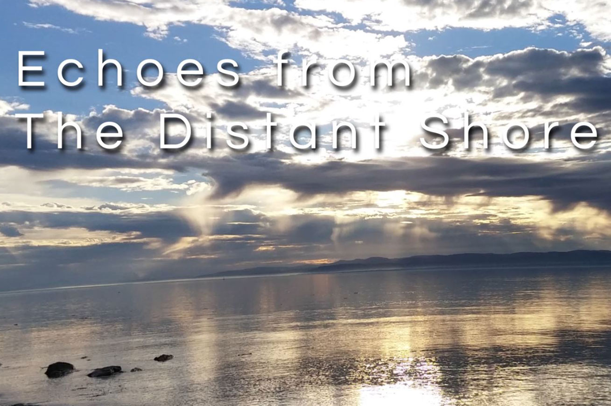

A client project where I was a member of a team of 3. Reach Canada requested the creation of 3-5 talking head videos. My primairy role in the project was audio engineer. I was responsible for recording the audio during film sessions, editing the recorded audio, and creating an original music composition for the final product. I also worked on the editing of some of the videos including the presentation video.
A motion graphics project detailing the life cycle and endangered status of the Monarch Butterfly. Research on the topic was completed prior to the creation of assets. I used a combination of Adobe Illustator and Adobe After Effects to complete this project. More of my graphics work can be viewed under the 'graphics' section under 'portfolio.'
A photo animations video project. All photos used in this project were previously taken by me. Created using Adobe After Effects. More samples of my photography can be viewed under the 'photography' section under 'portfolio.'
The purpose of this video project was to showcase the city of Ottawa during the autumn season. All footage, photographs, and music were created specifically for this project. Applications used: Adobe Premiere, Logix Pro X.